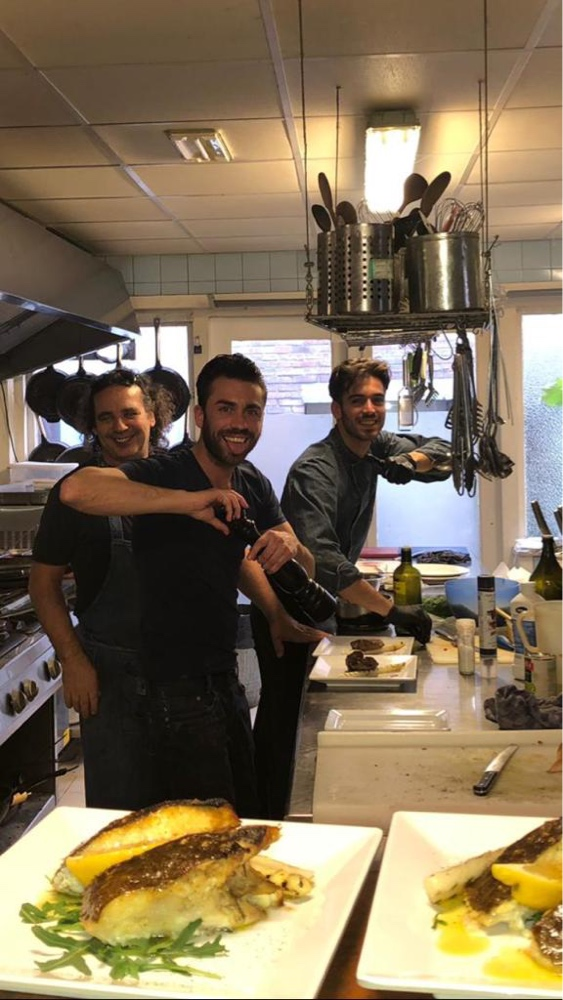

La Cucina Povera: puur en eerlijk
De roots van de familie liggen in een klein vissersdorpje net buiten Napels. Hier zijn eten, drinken en samenzijn onlosmakelijk met elkaar verbonden. Het is de plek waar onze liefde voor de authentieke Italiaanse keuken is ontstaan.
Onze kookstijl is gebaseerd op de filosofie van La Cucina Povera: het ten volste benutten van verse seizoensproducten en het maximaliseren van pure smaken. Geen onnodige poespas, maar koken met respect voor het ingrediënt en volgens traditioneel familierecept.

Welkom in het hart van Zevenhuizen
Wat begon met een grote droom, is uitgegroeid tot Borgo Antico. Wij geloven dat lekker eten niet ingewikkeld hoeft te zijn. Het geheime ingrediënt? Echte passie, vakmanschap en producten van de hoogste kwaliteit.
Of u nu gezellig langskomt met de familie voor een uitgebreid diner, geniet van een ambachtelijke pizza uit de oven of een klassieke pasta; bij ons stapt u heel even Italië binnen.